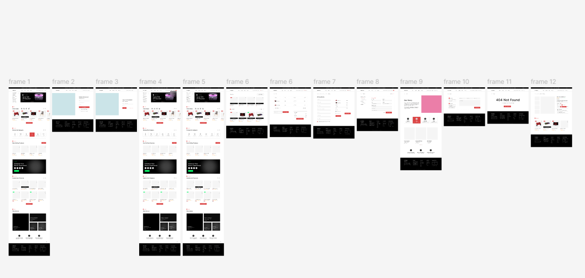
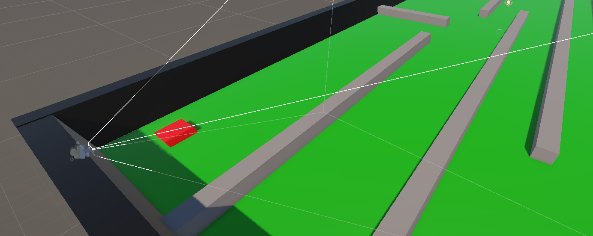

Recent Works & project
A curated selection of my latest Modeling,creativity and etc . Click to view to see All my works
3D Modeling
Modeling is creating 3D shapes, characters, and environments in Autodesk Maya using tools to build, edit, and refine geometry for animation, games, and films.
Pencil Sketch
Pencil sketching is the art of creating drawings using pencils, focusing on lines, shading, and textures to represent objects, people, or ideas in a simple and expressive way..
2D Animation
Animation is the art of creating movement from still images, using techniques like 2D, 3D, stop motion, or motion graphics to bring stories and ideas to life.

Figma Mini Project
Figma is a collaborative design tool that allows teams to create, prototype, and share UI/UX designs in real-time
Lightining in Maya
Lighting and texturing are two essential aspects of 3D art and game design that bring digital models and environments to life.

Unity Level Design and development
Developed a highly dynamic and interactive pricing component with custom toggles and signal-based state management.